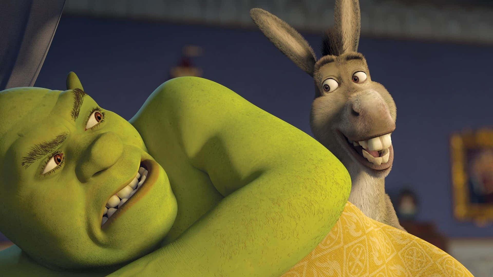
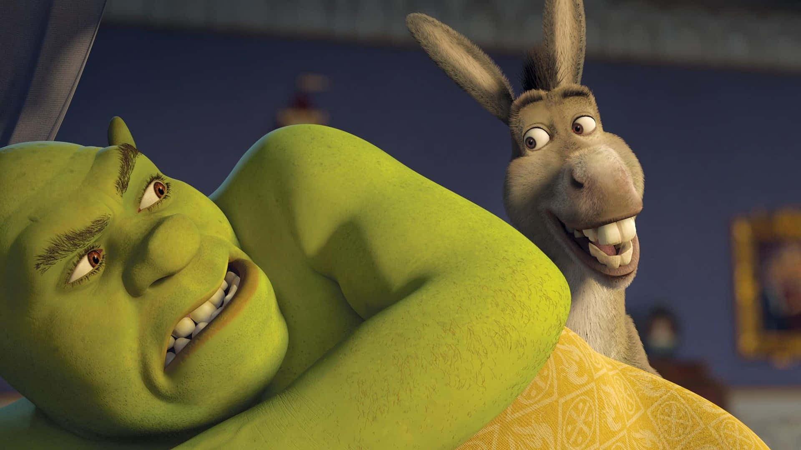

After YEARS of hard work shreks well deserved website has been made just for him, and for all that wish to remember him.
 

Shrek has said some very inspiring things, but on of the quotes i think we can all learn from is when he once said, "For Five Minutes...can you not be yourself" and i think we can all lear from this. Thank you for being here today.